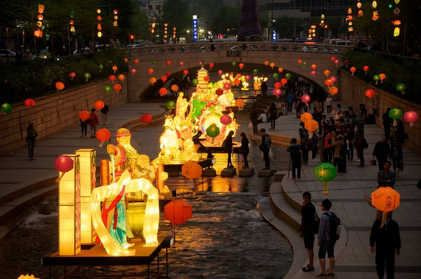

Du lịch Hàn Quốc
Welcome to Korea
Welcome to Korea
Trong văn hóa của các quốc gia Châu Á thì đèn lồng đã trở thành một sản phẩm quen thuộc và thường xuất hiện trong các lễ hội truyền thống và tại đất nước Hàn Quốc cũng vậy. Đối với người dân xứ củ sâm, đèn lồng có một vai trò vô cùng quan trọng và vào dịp lễ Phật đản hằng năm, lễ hội đèn lồng hoa sen lại được tổ chức tại quốc gia này.
Hàn Quốc đã trải qua 1600 năm lịch sử với biết bao cuộc chiến tranh, biết bao cột mốc đáng nhớ và trong suốt chiều dài lịch sử đó thì văn hóa Phật giáo luôn được thấm nhuần trong đời sống của mỗi người dân Hàn Quốc. Họ đã kết hợp một cách tài tình giữa đèn lồng trong văn hóa Á Đông và lễ hội Phật đản.
Tại Hàn Quốc, Phật giáo được coi là quốc giáo từ thời vua Chosun (1392 – 1910). Phật giáo có một sự ảnh hưởng mạnh mẽ trong đời sống hoàng gia và giới quan lại thời xưa. Tuy nhiên, có một thời gian, Nho giáo đã xâm chiếm và gây ảnh hưởng lớn đối với Hàn Quốc. Và để tránh sự ảnh hưởng của Nho giáo, có rất nhiều vị cao tăng đã tìm lên những ngọn núi cao, yên tĩnh để xây dựng chùa chiền. Kể từ đó Phật giáo đã nhanh chóng lan truyền trong nhân gian. Đó cũng là lý do mà nếu đi du lịch Hàn Quốc bạn sẽ thấy có hàng ngàn ngôi chùa được xây dựng tại đất nước này.
Với mỗi tín đồ Phật giáo thì ngày lễ Phật đản được xem là ngày lễ lớn và quan trọng nhất trong năm và đối với các phật tử Hàn Quốc cũng vậy. Họ tổ chức những lễ hội lớn vào ngày này và lễ hội đèn lồng hoa sen tại Hàn Quốc là một trong những lễ hội như vậy.
Những ai may mắn được tham dự lễ hội đèn lồng hoa sen tại Hàn Quốc đều phải nói rằng họ thật sự ấn tượng với sự đặc biệt và vi diệu của lễ hội này. Điểm nhấn đặc biệt nhất trong lễ hội đó chính là những chiếc đèn lồng. Người Hàn Quốc xem những chiếc đèn lồng là biểu tượng của ước mơ, mong muốn mọi người đều được tuệ giác của Đức Phật và ngọn nến được thắp sáng bên trong tượng trưng cho sự giác ngộ đó. Những người đi rước đèn lồng là đang góp công sức để chiếu rọi ánh sáng trí tuệ của Đức Phật từ hoa sen.
Những chiếc đèn lồng hoa sen đã xuất hiện cách đây hàng ngàn năm, từ thời đế chế Silla sau đó đến thời vua Koryo (918 – 1392) và đã trở thành một biểu tượng của lễ hội Phật giáo tại Hàn Quốc. Lồng đèn hoa sen tượng trưng cho niềm tin và sự hy vọng. Những chiếc đèn với đủ màu sắc : vàng, vàng tía, ánh hoa anh thảo ,….đan xen , lung linh và huyền ảo như đưa người ta về với cõi Phật bình yên. Người Hàn Quốc thậm chí còn thiết kế một chiếc đèn lồng khổng lồ đã được ghi vào sách kỷ lục Guinness thế giới năm 1989. Đây được coi như là một niềm tự hào của Hàn Quốc.
Lễ hội đèn lồng hoa sen tại Hàn Quốc là một lễ hội lớn và diễn ra trên khắp mọi miền đất nước tại quốc gia này. Tuy nhiên thời gian tổ chức ở mỗi vùng lại khác nhau. Có những nơi tổ chức lễ hội vào cuối tháng 3 âm lịch nhưng thường thì lễ hội này sẽ được tổ chức vào những ngày đầu tháng 4 và kéo dài trong khoảng một tuần.
Một trong những địa điểm lớn nhất tổ chức lễ hội đèn lồng hoa sen tại Hàn Quốc là ở quảng trường Dongdaemun. Có hàng ngàn người xếp hàng kéo dài hàng cây số để được tham gia rước đèn xuyên qua trung tâm thành phố Seoul và về chùa Jogye. Lễ hội này không chỉ hấp dẫn các phật tử mà còn hấp dẫn cả những người không theo tín ngưỡng và khách du lịch đến với Hàn Quốc.
Những con người đến tham gia lễ hội đèn lồng hoa sen này dù khác nhau về quốc tịch, văn hóa, tôn giáo nhưng khi đến với lễ hội thì tất cả đều hòa vào làm một. Các vị tăng sĩ từ các quốc gia khác nhau trên thế giới như châu Mỹ, Nga, Isarel, cộng hòa Czech, Ba Lan, Ấn Độ, Nepal,…cũng đã đến Hàn Quốc để được tham dự lễ hội này. Tất cả đều háo hức để được chen chân vào cùng với đoàn người trong lễ hội rước đèn. Ai nấy cũng cố gắng cầm trên tay một chiếc đèn lồng để cầu mong sức khỏe, bình an và may mắn đến với bản thân mình.
Có thể nói lễ hội đèn lồng hoa sen đã trở thành một biểu tượng của Phật Giáo Hàn Quốc. Nếu có dịp đến du lịch Hàn Quốc vào đúng thời gian diễn ra lễ hội thì bạn nên dành thời gian để tham dự lễ hội đặc biệt này. Chắc chắn nó sẽ mang đến cho bạn những trải nghiệm vô cùng thú vị đấy.
GỢI Ý TOUR DU LỊCH HÀN QUỐC |
|---|
>> Hà Nội – Hàn Quốc: Seoul – Nami – Everland 5N Bay T’way Air
|
Top 20 điểm tham quan nhất định phải ghé thăm trong hành trình chinh phục Seoul

Điện thoại: 0903357616
Email: thaontps24690@fpt.edu.vn